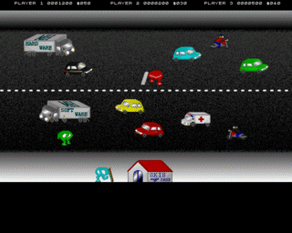
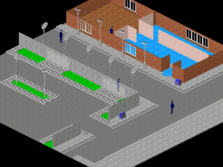

| 'Tis the season to be jolly, and here's why. Take a look at these fine games that are headed our way sometime soon... |
|
Willytron Probably not the official title, but this just about sums up this as-yet-unnamed game by John Dow. The man capable of coding whole games in mere weeks has produced what looks to be the combination of two totally unrelated games; Manic Miner and Robotron. This one we look forward to with great anticipation. Even Nathan, who's a bit of a girl when it comes to hard games (You're fired! Ed.). John Dow's Homepage |

|
|  |
Horace Trilogy Dominic Cresswell's planned masterpiece, this will be a remake of what are apparently episodes four to six of the Horace Saga. He's currently looking for a coder, so if you can code, go offer now, because we really want to play Horace Goes Skiing in three-player mode. Horace Trilogy Homepage |
|
Ant Attack 2000 This promises to be the greatest game that ever saw the light of day. Simultaneous four-player mode, cities the size of, well, cities, and realtime lighting. Already it looks gorgeous, and work has barely even begun. (Cheers, here's that fiver. Ed.) AA2K Homepage |
 |